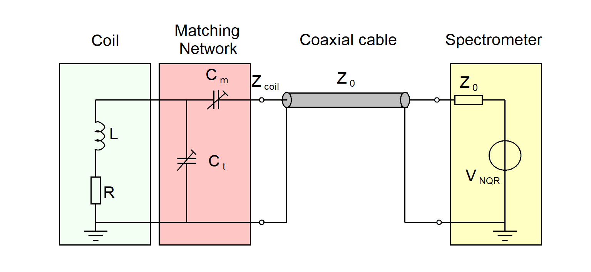
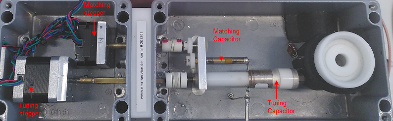
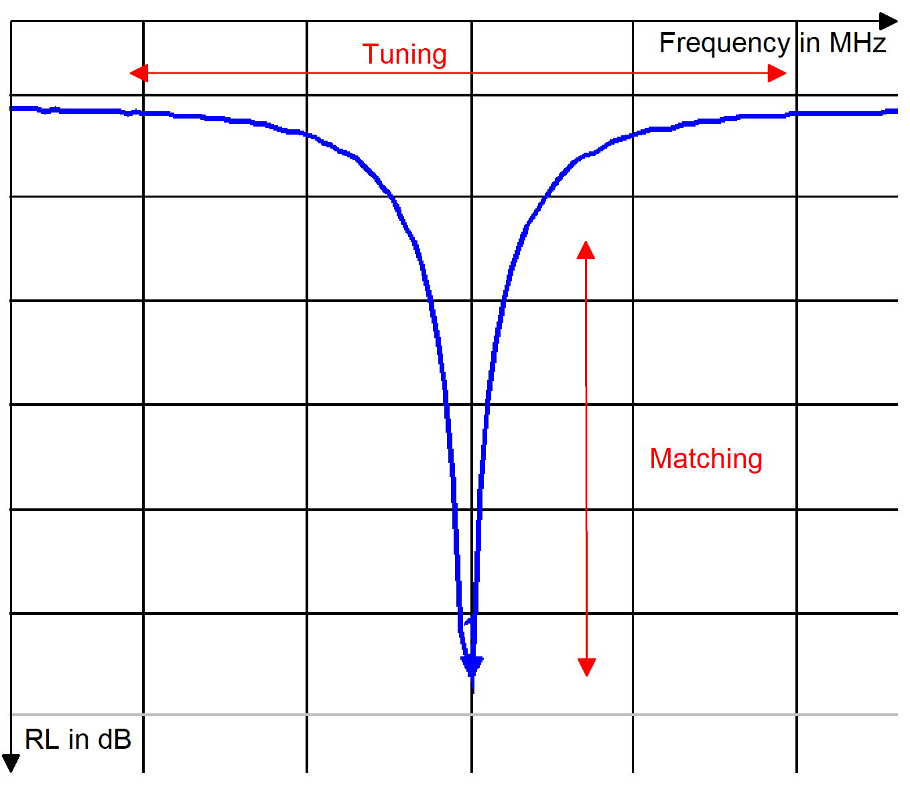
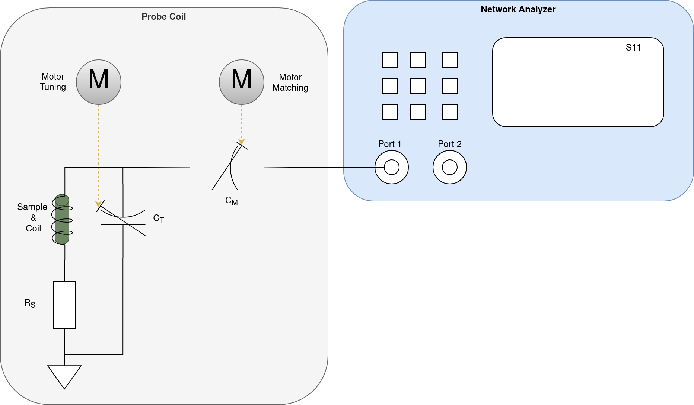
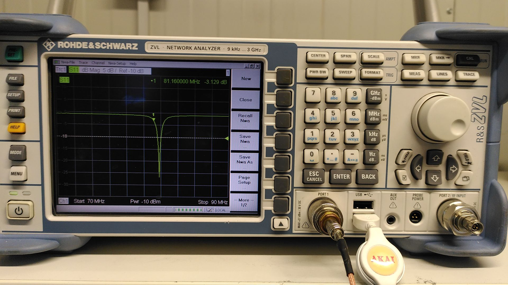

Tuning and Matching#
Tuning and Matching describes the process of adjusting the probe coil to the Larmor frequency of the sample.
Theory#
At high frequencies the impedance of the coil has to be matched to the characteristic impedance of the cables and spectrometer of \(50 \Omega\). If we don’t match the impedance, the signal will be reflected at the coil and we will lose signal strength.
 |
|---|
Figure: Example of a parallel resonator topology. The coaxial cable and output of the spectrometer are matched to a purely resistive impedance \(Z_0\) of \(50\Omega\). The Matching Network matches the impedance of the coil to \(50\Omega\) to minimize reflections. |
The reflection coefficient \(\Gamma\) describes what portion of the forwarded signal is reflected. It can be calculated from the impedance of the probe coil \(Z_{coil}\) and the characteristic impedance of the cable \(Z_0\) [2].
As can be seen, the reflection of the forward running signal is minimal when \(Z_{coil}\) is equal to \(Z_{0}\).
The reflection coefficient can can also be expressed in terms of the Return Loss \(RL\) in dB:
We therefore want to achieve a high Return Loss to minimize reflections.
Tuning and Matching in Practice#
For Tuning and Matching the coil has two adjustable capacitors. One for tuning and one for matching of the probe coil:
 |
|---|
Figure: Picture of the probe coil with the steppers. The stepper/capacitor for tuning and matching are labelled. |
While the probe coil has stepper motors for automatic Tuning and Matching of the probe coil, we will use our hands to adjust the capacitors. Don’t worry, the stepper motors can be moved by hand without damaging them.
The principle of tuning and matching is shown in the following figure:
 |
|---|
Figure:Depiction of a reflection measurement of our probe coil. On the x-axis you can see the frequency and on the y-axis the \(RL\). In a simplified viewpoint, \(C_t\) can be used to adjust the resonance frequency (Tuning) of the probe coil, and \(C_m\) for the amount of reflection (Matching) occurring at resonance frequency. While tuning and matching influence each other in real applications, this representation can be helpful in understanding the functions of the capacitors for tuning and matching. |
We use a Vector Network Analyzer (VNA) to measure the \(S_{11}\) value of our probe coil. The \(S_{11}\) value is directly related to the Return Loss \(RL\): In a simplified view only the sign is inverted.
Connect the SMA port of the probe coil to Port 1 of the VNA and start a \(S_{11}\) measurement:
 |
|---|
Figure: Schematic of the VNA measurement setup. The probe coil is connected to Port 1 of the VNA. |
Now create a marker by clicking the MKR button and move it to 83.56 MHz, which is the Larmor Frequency of our BiPh3 sample. You can now adjust the capacitors of the probe coil to achieve a minimum \(S_{11}\) value at 83.56 MHz (about -30dB). By narrowing the frequency range of the VNA you can increase the resolution of the measurement.
 |
|---|
Figure: Picture of the VNA performing a \(S_{11}\) measurement. Port 1 of the VNA is directly connected to our probe coil. The VNA has a button |
Make sure you perform the Tuning and matching with your sample in the probe coil. The sample influences the resonance frequency of the probe coil.